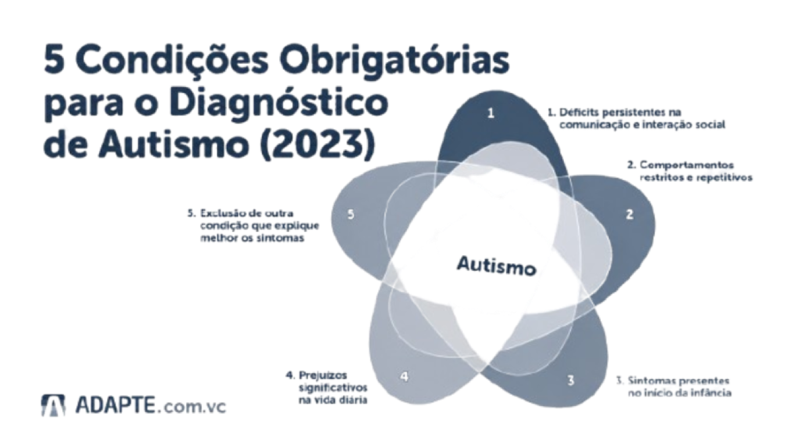

O diagnóstico do TEA (Transtorno do Espectro Autista) é clínico, ou seja, não depende de exames laboratoriais específicos. Ele é realizado por profissionais especializados, a partir da observação do comportamento, do histórico de desenvolvimento e da aplicação de questionários e entrevistas com a pessoa e seus responsáveis. São avaliados aspectos como comunicação, interação social e padrões de comportamento. Por isso, é fundamental que a análise seja feita de forma cuidadosa e por uma equipe qualificada, garantindo um diagnóstico mais preciso e confiável.

A avaliação deve ser feita por uma equipe, que pode incluir:
Testes online sobre autismo podem ajudar como um primeiro indicativo, mas não substituem uma avaliação profissional.